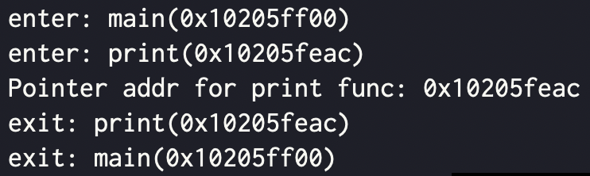

참고한 것들
TL;DR
- 코드
#define _GNU_SOURCE
#include <stdio.h>
#include <dlfcn.h>
__attribute__((no_instrument_function))
void __cyg_profile_func_enter(void *this_fn, void *call_site) {
Dl_info info;
if (dladdr(this_fn, &info))
printf("enter: %s(%p)\n", info.dli_sname, (int*)this_fn);
}
__attribute__((no_instrument_function))
void __cyg_profile_func_exit(void *this_fn, void *call_site) {
Dl_info info;
if (dladdr(this_fn, &info))
printf("exit: %s(%p)\n", info.dli_sname, (int*)this_fn);
}
void print() {
printf("Pointer addr for print func: %p\n", &print);
}
int main() {
print();
return 0;
}- 컴파일
gcc -finstrument-functions -ldl -rdynamic main.c- 결과

설명
-finstrument-functions
- 함수에 진입할 때에는
__cyg_profile_func_enter함수가 호출되고, 빠져나올 때는__cyg_profile_func_exit함수가 호출된다. - 이 기능을 활성화하기 위해서는 컴파일할 때
-finstrument-functions를 추가해 줘야 한다. - 근데
__cyg_어쩌고이것도 결국에는 함수이기 때문에 여기에 진입할 때도 이 함수가 호출되게 되는 loop 에 빠지게 되는데- 이것을 방지하는 것이
__attribute__((no_instrument_function))이다. - 이놈은 해당 함수에 대해서는 이런 hook 을 실행하지 말라는 뜻이다.
- 따라서
__cyg_어쩌고함수 말고도 다른 함수에 대해서도 hook 을 실행하기를 원치 않는다면, 이것을 함수 선언 위에 적어주면 된다.
- 이것을 방지하는 것이
dlfcn.h
- 이놈은 Dynamic Link 기능을 위한 header 파일이다.
- 즉, pointer 값은 컴파일 타임에서는 알 수 없기 때문에, 러닝 타임에 이러한 동적인 정보들을 사용할 수 있게 해주는 것.
- 여기에 위 코드에서 사용하는
dladdr이나Dl_info등이 정의되어 있다.dladdr함수는 function pointer 를 function name 으로 바꿔주는 함수이다.
- 이놈을 사용하기 위해서는 일단
#define _GNU_SOURCE메크로가 있어야 한다.-ldl와-rdynamic가 컴파일 옵션으로 들어가야 한다.- 얘네들이 뭔지는 검색 안해봤다. 나중에 찾아보고 정리하겠지 뭐
참고: Kernel develop
- 이
dlfcn.h는 user space 에서만 사용할 수 있다. - Kernel 이나 module 을 개발할 때 넣으면 컴파일할 때 이 헤더파일을 찾을 수 없다는 똥을 던져준다.
- 참고에 참고로, 마찬가지의 이유로 진자루 많이 쓰는
stdio.h도 kernel 에서는 사용할 수 없다. 대신linux/kernel.h의printk를 사용해서 커널 메세지로 내보낼 수 있다.
- 참고에 참고로, 마찬가지의 이유로 진자루 많이 쓰는